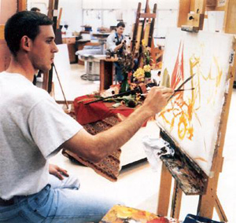
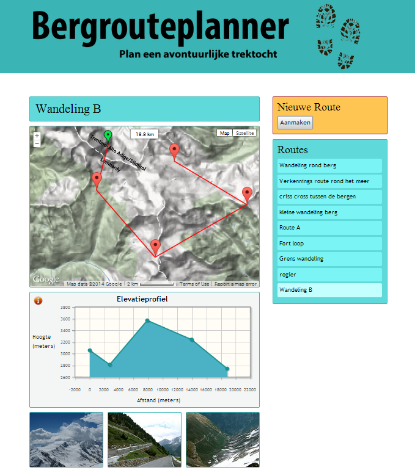
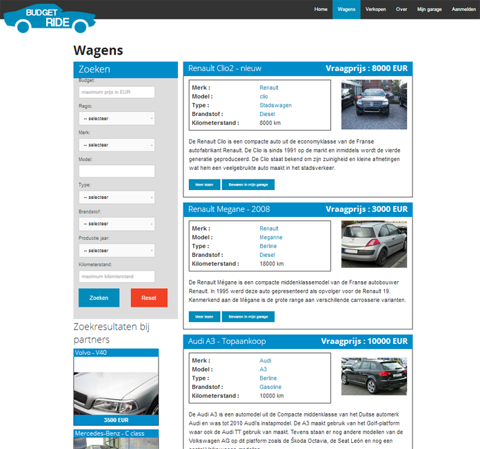
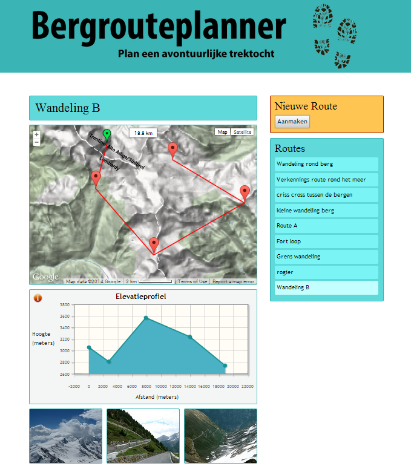
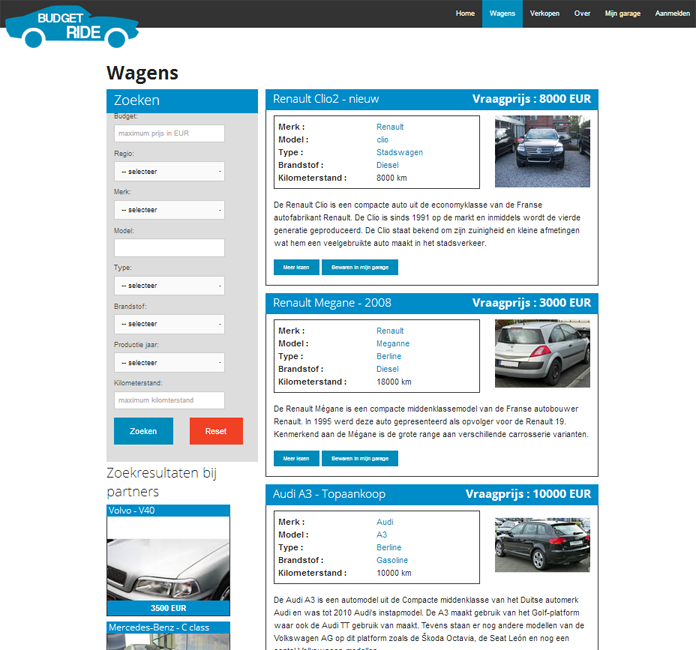
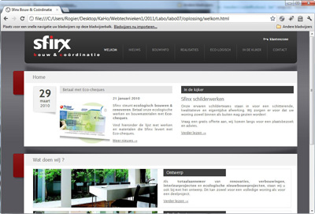

Intro
use the arrow keys to navigate; press space for slide overviewIntro
About me
Hi
My work
At Odisee
-
current courses:
- webtechnology (S2)
- UX design (S3)
- clientside webscripting 1 (S3)
- clientside webscripting 2 (S4)
-
abroad:
- Serious Learning Games (European LLP project)
- Serious Games Network (European LLP project)
- teaching in Denmark, Spain, Estonia, Finland...
Intro
About this course
What we won't do...
- create fancy designs
- → we'll focus on the technical part
What we'll do in other courses...
 



- information architecture
- clientside scripting
- serverside scripting
- databases
What we will do in this course
- essentially static sites (HTML + CSS)
-
some dynamic effects (CSS3):
- hover effects
- transitions
- basic animations
- ...
- clientside techniques, but
no scripting yet

Our target media
- all common browsers on all common platforms
- browsers with limited possibilities
- aural and braille browsers
- internet, your smartphone, tablet
- browsers in Russia, China, anywhere
- ...
- → accessibility
- → why?
Our target media
Our target audience
- the business man
- the bakery, the butcher, the hairdresser
- grandma
- Too Much Coffee Man
- everyone, basically...
- ...
- → usability
- → why?
Our target audience
Our coding philosophy (1)
- stick to web standards
- strict separation of content, presentation and behaviour
- well-documented and lean code
- → standards-compliance
- → why?
Our coding philosophy (2)

Course Topics
- Five main parts:
- structure with HTML
- presentation with CSS
- layout with CSS
- HTML5
- responsive layouts
- + guest speakers
Intro
Practical info
Theory
- weekly, unless announced well in advance
- not evaluated explicitly
Practice
- 10 lab sessions (30%)
- 2 individual exams (40%)
- one project, oral examination (30%)
- → project < 10/20 = no credit!
- → average 2 exams < 10/20 = no credit!
What do you need?
- Decent computer (bring your laptop if you like, external mouse is obligatory!)
- Most important browsers: Chrome, FireFox, IE
-
Plugins:
- Web developer toolbar (Chrome, Firefox)
- HTML5 outliner (Chrome)
- Tilt (Firefox)
Material and support
- Instructors
- Rogier van der Linde — rogier.vanderlinde@odisee.be
- Kevin Picalausa — kevin.picalausa@odisee.be
- Joris Maervoet — joris.maervoet@odisee.be
- Course Material
big fat syllabusonline presentations on ikdoeict leercentrum- lab assignments and solutions
- blogs, magazines and tutorials (but beware of the quality!)
- Support
- any time during lab sessions
- otherwise via www.ict-blue.be (use topic prefix [WT])
- e-mail for very personal matters only (allow 3 working days response time)
Finally
-
Mind our house rules
- coding style rules
- deadlines and uploads
- absences
- plagiarism
- Attitude, accuracy, progress and programming style is more important than knowledge
- remember these words: accessibility, usability & standards compliance